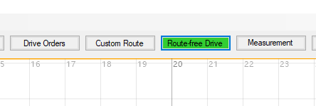
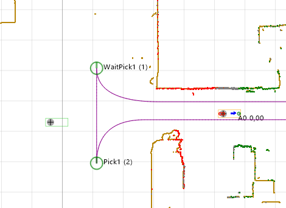
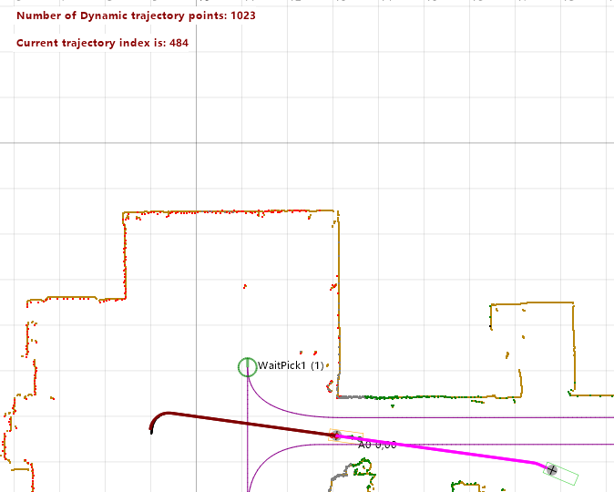
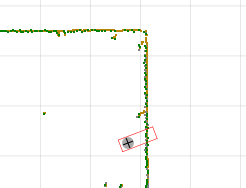

Route-free Navigation
Updated 10.02.2024
Overview
Route-free navigation is a feature that allows the AGV to plan a path to target location defined by coordinates and a heading. The path will take into account the walls defined in the environment file and avoid them. The route-free navigation doesn't require a segment file, unlike normal Navitrol navigation, but will also work with segment file present.
Introduction
Route-free navigation can be used to drive the AGV directly into a desired location. It utilizes a path planning algorithm implemented in ROS to plan a route from current AGV position to a given target, based on the environment file. If combined with Obstacle avoidance V2 feature, the AGV can also avoid new obstacles discovered on the way. Both features use the same underlying planner.
The route free drive can be activated through multiple interfaces.
- Route-free Drive command given in Monitor
- Command given from Navithor
- Command given through Ethernet Supervisor Interface
- Message 3057 - Route-free Navigation Request
If connected to Navithor, the AGV will ask for permission to drive the route-free path before doing so.
Limitations
- The route-free navigation can't plan arbitrarily long paths. The exact maximum path length is difficult to determine and depends on the complexity of the environment and the route
- The feature can't plan routes that enter or exit an obstacle avoidance zone. This means, that planning a route can be successful only when the current AGV position and the given target location are both inside the same zone, or outside of any zone
How to use
To use the feature through Navitrol Monitor, connect Monitor to the AGV. There should be a button labeled "Route-free Drive". When you click on this button, a green AGV outline will appear on the cursor and the button will turn green. Left-click the desired target position (coordinates) in the map. The AGV frame will be hold in that place, and the target heading of the AGV can be changed by moving the cursor around. Left-clicking again confirms the target heading and triggers the route planning. If everything goes well, the AGV will plan a path to the given location and start to drive. If there is an error, the AGV outline will turn red and there will be a warning WARNING_ROUTE_FREE_NAVIGATION_FAILED shown.
The button in Monitor

The navigation target marker. The exact shape will depend on the shape of the AGV.

Driving the route-free navigation path

Failed to plan a path because of a wall

Set up
Preconditions
- The feature needs the ROS2 base Docker image to be installed. See e.g. section ROS2 Navigation2 installation in obstacle avoidance v2 document
- There has to be an environment file on the AGV
Parameters
| Parameter | Recommended value | Description |
|---|---|---|
| I, ros_enabled | 1 | Enables ROS (needed for route free navigation) |
| I, route_free_navigation_enabled | 1 | Enables route free navigation feature |
| F, route_free_navigation_end_straight_dist | 0.3 | The planner adds this long straight piece to the end of the route before the target to ensure target is reached with correct orientation |
| F, route_free_navigation_velocity | 0.3 | The velocity to use [m/s] for the routes if not otherwise specified by the command. This velocity is further limited by other factors. |
| I, route_free_navigation_set_rtr_bit | 0 | Used for compatibility with older Navithor versions. Pretends that 'Return to route' is active so Navithor allows the AGV to drive a custom route |
Reading the logs
There is no common prefix for the log lines related to this feature, but "route free" and "route-free" are common phrases to look for.
Errors and warnings
661 - WARNING_ROUTE_FREE_NAVIGATION_FAILED
See Error description.
Troubleshooting
The AGV frame turns red
- Check that the position you have selected is not too close to a wall
- If obstacle avoidance zones exist in the map, check that reaching the target location does not require entering or exiting an obstacle avoidance zone
The button doesn't appear in Monitor
- Check that the feature is enabled in the parameters
The target marker is stuck and doesn't move with the mouse
- Disable the tool and enable it again